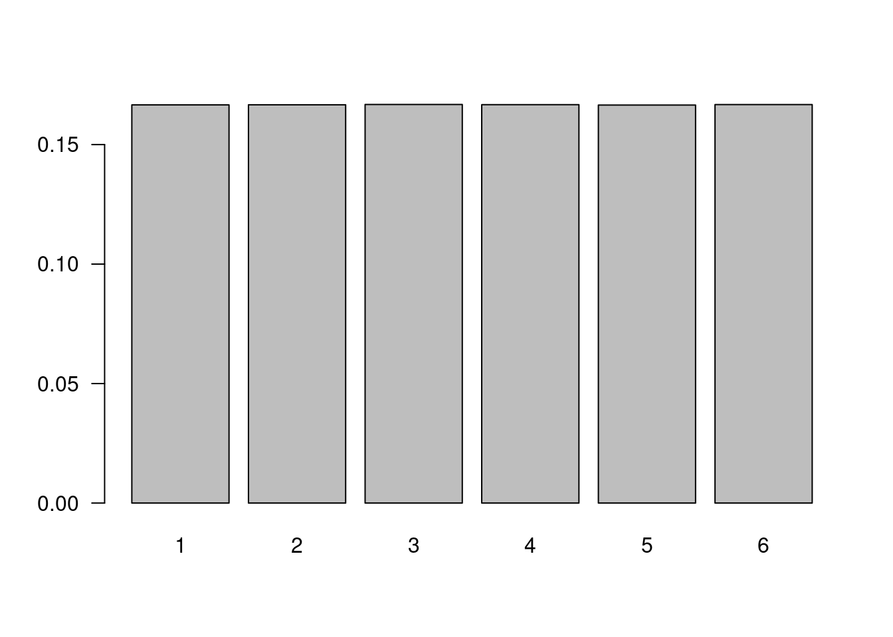
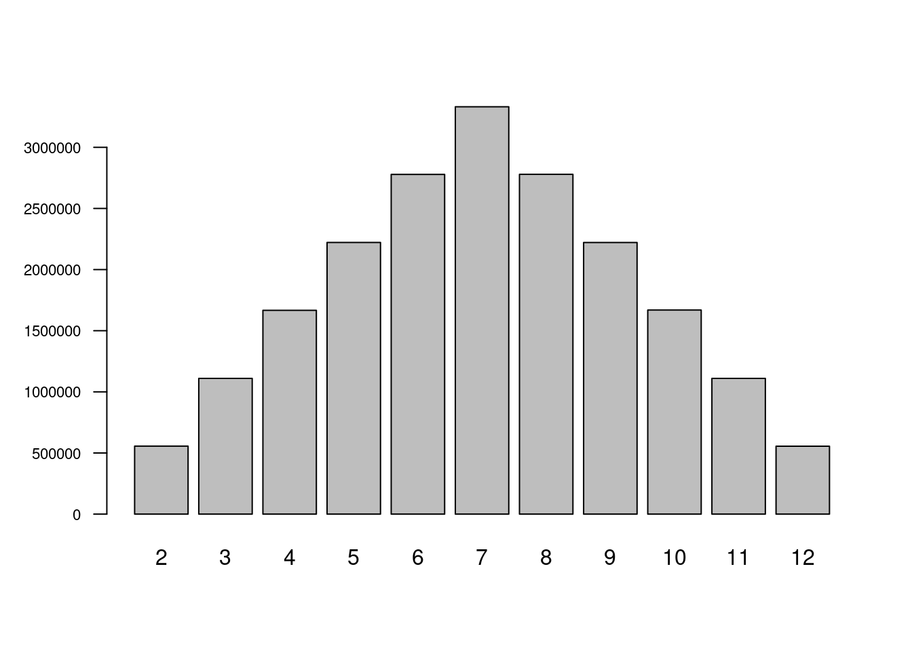
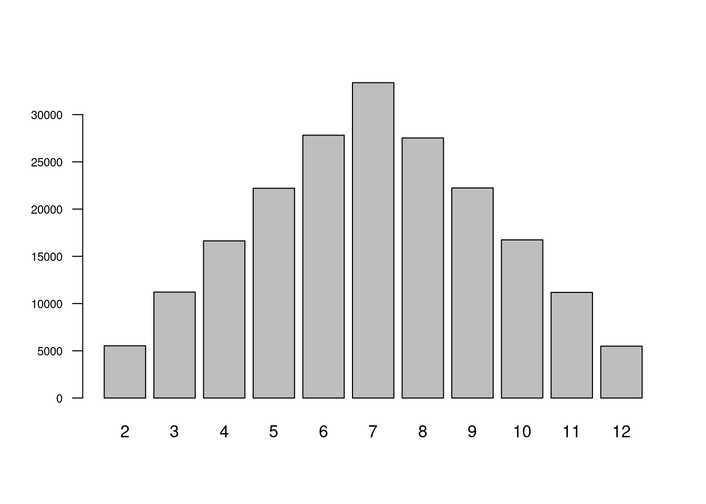

Código 4
Módulo 2- Unidad 2.1
dgonzalez
Experimentos aleatorios
Como se menciona en la Guía 2.1, un Experimento aleatorio se puede definir como una acción que podemos repetir en iguales condiciones muchas veces y cuyo resultado no conocemos anticipadamente
Un ejemplo de ello es cuando estamos jugando parques y un jugador lanza dos dados, el resultado solo es posible de observar después de haber realizado la acción de lanzarlos.
Al conjunto de todos los posibles valores que puede tomar el experimento aleatorio se le denomina Espacio muestral, que se denota por la letra mayuscula S.

Para este ejemplo :
\[S=\{ 2,3,4,5,6,7,8,9,10,11,12 \}\]
Lanzamiento de un dados
n=20000000
x=sample(1:6,n, replace = TRUE)
td1=prop.table(table(x))
barplot(td1, las=1)
Lanzamiento de dos dados
n=20000000
d1=sample(1:6,n, replace = TRUE)
d2=sample(1:6,n, replace = TRUE)
dados=data.frame(d1,d2)
suma=apply(dados, 1, sum)
barplot(table(suma), las=1,cex.axis=0.7)
data.frame(prop.table(table(suma)))## suma Freq
## 1 2 0.02777335
## 2 3 0.05559795
## 3 4 0.08338320
## 4 5 0.11113310
## 5 6 0.13882525
## 6 7 0.16661895
## 7 8 0.13905080
## 8 9 0.11108175
## 9 10 0.08325140
## 10 11 0.05547060
## 11 12 0.02781365Procedimiento alternativo
t=sapply(1:200000, function(x){sum(sample(1:6,2,rep=T))})
barplot(table(t), las=1, cex.axis=0.7)
Urna
Simulación de urna con: 3 bolas Blancas, 5 Rojas y 4 Azules
1 representa las bolas blancas 2 representa las bolas rojas 3 representa las bolas azules
sample(c(1,2,3),2,rep=T,prob=c(3,5,4))## [1] 3 3La misma simulación con palabras
sample(c("Blanca","Roja","Azul"),2,rep=T,prob=c(3,5,4))## [1] "Azul" "Roja"Tablas de contingencia
Las tablas de contingencia o tablas cruzadas se basan en las tablas de frecuencia para dos variables cualitativas o cuantitativas con pocos valores. En ellas se representan probabilidades conjuntas, marginales y condicionales
Inicialmente construimos una tabla con los valores de las frecuencias relativas conjuntas
x=c(20,60,100,30,140,50)
m=matrix(x,ncol=2)
rownames(m)=c("Adminitrativo","Operativo","Vendedor")
colnames(m)=c("Mujer","Hombre")
m## Mujer Hombre
## Adminitrativo 20 30
## Operativo 60 140
## Vendedor 100 50En este caso se adicionan las frecuencias relativas marginales
addmargins(m)## Mujer Hombre Sum
## Adminitrativo 20 30 50
## Operativo 60 140 200
## Vendedor 100 50 150
## Sum 180 220 400Para convertirlas en probabilidades utilizamos la función prop.table()
prop.table(m)## Mujer Hombre
## Adminitrativo 0.05 0.075
## Operativo 0.15 0.350
## Vendedor 0.25 0.125Esta funcion tambien se utiliza para calcular las probabilidades condicionales por filas
prop.table(m,1)## Mujer Hombre
## Adminitrativo 0.4000000 0.6000000
## Operativo 0.3000000 0.7000000
## Vendedor 0.6666667 0.3333333o las probabilidades condicionales por columnas
prop.table(m,2)## Mujer Hombre
## Adminitrativo 0.1111111 0.1363636
## Operativo 0.3333333 0.6363636
## Vendedor 0.5555556 0.2272727Ejemplo
# Colombia= read.csv("data/Colombia.csv")
t21=table(Colombia$ubicacion, Colombia$estado)
(t22=addmargins(t21))##
## fallecido grave leve moderado Sum
## casa 0 0 4587162 0 4587162
## fallecido 119482 0 0 0 119482
## hospital 0 0 0 21235 21235
## hospital uci 0 3972 0 0 3972
## Sum 119482 3972 4587162 21235 4731851t23=prop.table(t21)
round(t23, 4)##
## fallecido grave leve moderado
## casa 0.0000 0.0000 0.9694 0.0000
## fallecido 0.0253 0.0000 0.0000 0.0000
## hospital 0.0000 0.0000 0.0000 0.0045
## hospital uci 0.0000 0.0008 0.0000 0.0000t31=table(Colombia$departamento_nom,Colombia$estado)
t32=prop.table(t31,1)
t33=addmargins(t32,2)
round(t33,4)##
## fallecido grave leve moderado Sum
## AMAZONAS 0.0380 0.0000 0.9597 0.0023 1.0000
## ANTIOQUIA 0.0215 0.0005 0.9752 0.0028 1.0000
## ARAUCA 0.0319 0.0015 0.9537 0.0129 1.0000
## ATLANTICO 0.0345 0.0002 0.9646 0.0007 1.0000
## BARRANQUILLA 0.0276 0.0003 0.9717 0.0004 1.0000
## BOGOTA 0.0189 0.0010 0.9789 0.0011 1.0000
## BOLIVAR 0.0256 0.0005 0.9698 0.0041 1.0000
## BOYACA 0.0238 0.0011 0.9671 0.0080 1.0000
## Caldas 1.0000 0.0000 0.0000 0.0000 1.0000
## CALDAS 0.0221 0.0010 0.9690 0.0079 1.0000
## CAQUETA 0.0404 0.0013 0.9511 0.0071 1.0000
## CARTAGENA 0.0171 0.0003 0.9799 0.0026 1.0000
## CASANARE 0.0251 0.0013 0.9629 0.0107 1.0000
## CAUCA 0.0263 0.0016 0.9635 0.0085 1.0000
## CESAR 0.0279 0.0009 0.9605 0.0108 1.0000
## CHOCO 0.0242 0.0007 0.9691 0.0060 1.0000
## CORDOBA 0.0357 0.0007 0.9558 0.0077 1.0000
## CUNDINAMARCA 0.0256 0.0007 0.9651 0.0086 1.0000
## GUAINIA 0.0132 0.0000 0.9855 0.0014 1.0000
## GUAJIRA 0.0315 0.0007 0.9639 0.0040 1.0000
## GUAVIARE 0.0176 0.0008 0.9729 0.0087 1.0000
## HUILA 0.0342 0.0008 0.9536 0.0115 1.0000
## MAGDALENA 0.0537 0.0007 0.9385 0.0071 1.0000
## META 0.0246 0.0004 0.9691 0.0058 1.0000
## NARIÑO 0.0334 0.0014 0.9507 0.0146 1.0000
## NORTE SANTANDER 0.0465 0.0022 0.9418 0.0094 1.0000
## PUTUMAYO 0.0409 0.0008 0.9509 0.0075 1.0000
## QUINDIO 0.0304 0.0002 0.9650 0.0043 1.0000
## RISARALDA 0.0251 0.0005 0.9678 0.0066 1.0000
## SAN ANDRES 0.0199 0.0010 0.9731 0.0060 1.0000
## SANTANDER 0.0321 0.0008 0.9581 0.0091 1.0000
## STA MARTA D.E. 0.0290 0.0007 0.9659 0.0043 1.0000
## SUCRE 0.0272 0.0007 0.9610 0.0111 1.0000
## Tolima
## TOLIMA 0.0329 0.0014 0.9570 0.0087 1.0000
## VALLE 0.0316 0.0009 0.9626 0.0049 1.0000
## VAUPES 0.0099 0.0006 0.9895 0.0000 1.0000
## VICHADA 0.0161 0.0007 0.9771 0.0061 1.0000t31=table(Colombia$departamento_nom,Colombia$estado)
t34=prop.table(t31,2)
t35=addmargins(t34,1)
round(t35,4)##
## fallecido grave leve moderado
## AMAZONAS 0.0021 0.0000 0.0014 0.0007
## ANTIOQUIA 0.1270 0.0967 0.1503 0.0936
## ARAUCA 0.0033 0.0048 0.0026 0.0076
## ATLANTICO 0.0324 0.0048 0.0236 0.0034
## BARRANQUILLA 0.0445 0.0138 0.0408 0.0035
## BOGOTA 0.2219 0.3691 0.2987 0.0721
## BOLIVAR 0.0068 0.0040 0.0067 0.0060
## BOYACA 0.0202 0.0274 0.0214 0.0382
## Caldas 0.0000 0.0000 0.0000 0.0000
## CALDAS 0.0180 0.0237 0.0205 0.0362
## CAQUETA 0.0074 0.0073 0.0045 0.0073
## CARTAGENA 0.0168 0.0101 0.0251 0.0146
## CASANARE 0.0071 0.0108 0.0071 0.0170
## CAUCA 0.0112 0.0209 0.0106 0.0202
## CESAR 0.0200 0.0186 0.0179 0.0434
## CHOCO 0.0032 0.0028 0.0033 0.0044
## CORDOBA 0.0292 0.0179 0.0203 0.0356
## CUNDINAMARCA 0.0544 0.0425 0.0534 0.1034
## GUAINIA 0.0002 0.0000 0.0005 0.0001
## GUAJIRA 0.0108 0.0068 0.0087 0.0077
## GUAVIARE 0.0007 0.0010 0.0010 0.0020
## HUILA 0.0241 0.0174 0.0175 0.0455
## MAGDALENA 0.0115 0.0045 0.0053 0.0086
## META 0.0174 0.0093 0.0178 0.0231
## NARIÑO 0.0239 0.0292 0.0177 0.0587
## NORTE SANTANDER 0.0332 0.0476 0.0175 0.0378
## PUTUMAYO 0.0052 0.0030 0.0031 0.0053
## QUINDIO 0.0137 0.0033 0.0113 0.0109
## RISARALDA 0.0177 0.0116 0.0178 0.0260
## SAN ANDRES 0.0011 0.0018 0.0014 0.0019
## SANTANDER 0.0580 0.0418 0.0452 0.0929
## STA MARTA D.E. 0.0150 0.0116 0.0130 0.0126
## SUCRE 0.0129 0.0098 0.0119 0.0297
## Tolima 0.0000 0.0000 0.0000 0.0000
## TOLIMA 0.0285 0.0360 0.0216 0.0425
## VALLE 0.0998 0.0894 0.0793 0.0865
## VAUPES 0.0001 0.0003 0.0004 0.0000
## VICHADA 0.0004 0.0005 0.0006 0.0008
## Sum 1.0000 1.0000 1.0000 1.0000